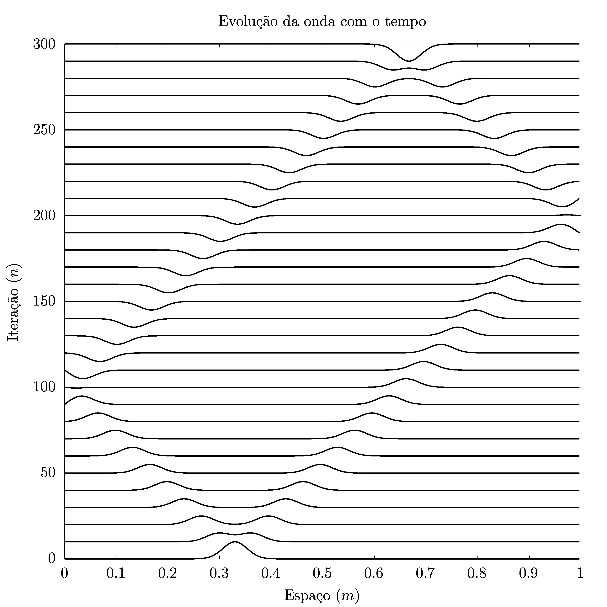
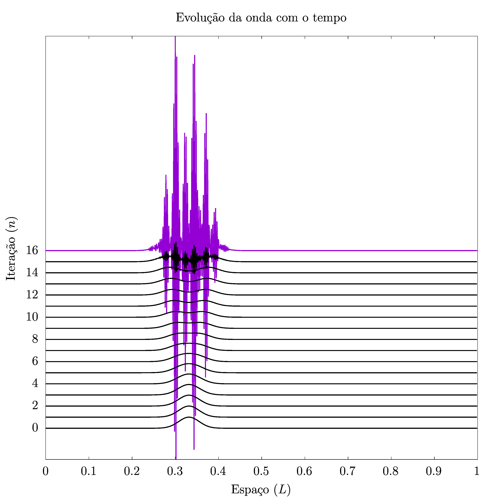
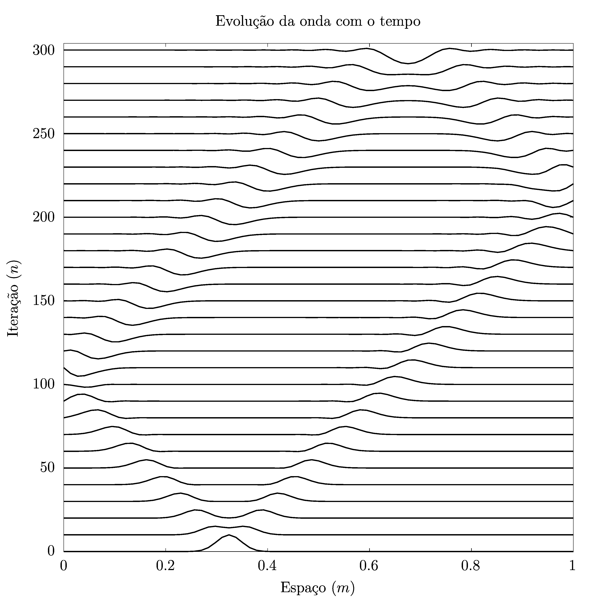
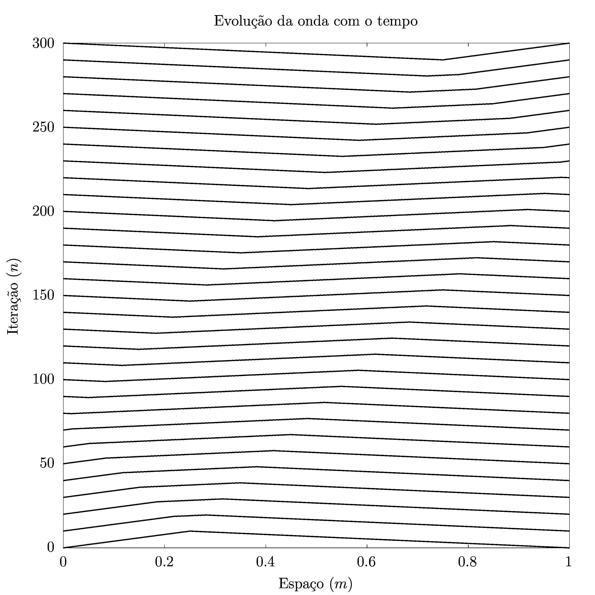
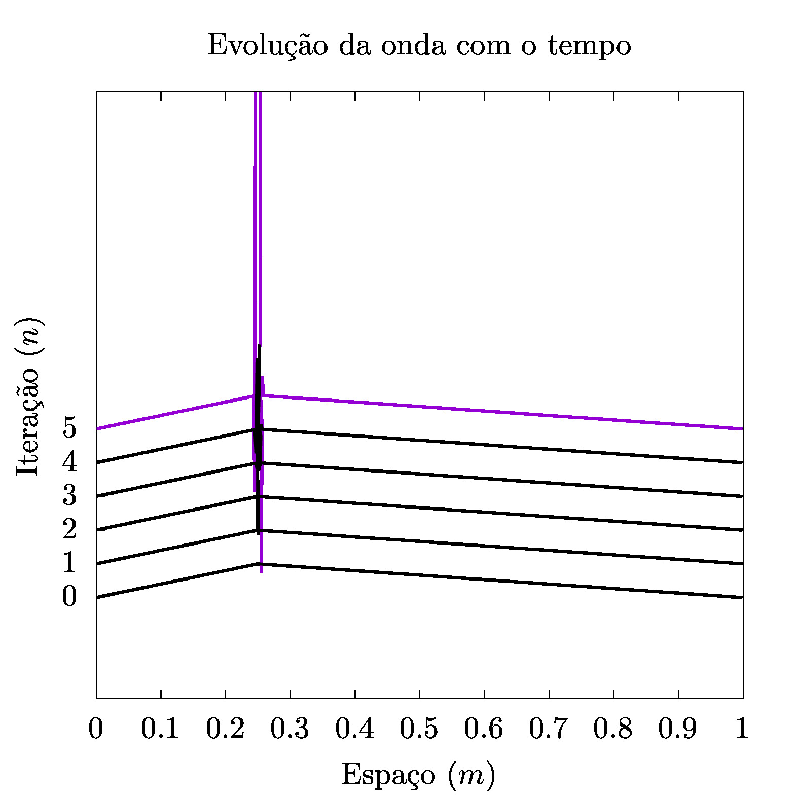
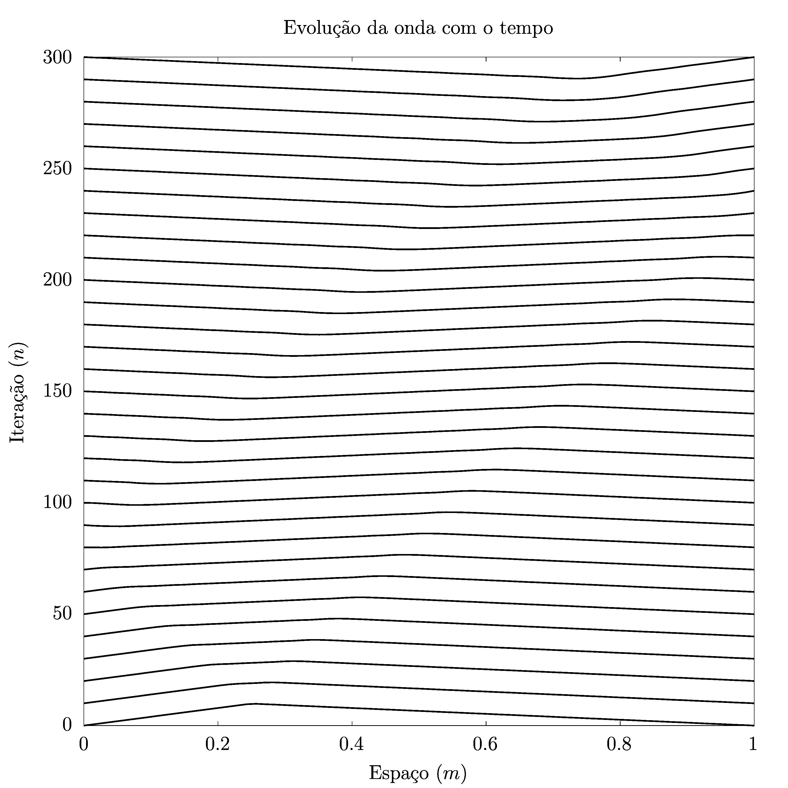

EQUACÕES DE ONDA
Edgard Macena Cabral Nº 11820833
Abril 2023
Introdução
As ondas são uma importante parte da física. Uma onda ideal pode ser descrita através da equação
Sendo uma equação diferencial, é claro, precisamos de condições de contorno bem defindas, que alteram profundamente o caráter da solução
Podemos discretizar essa equação através da discretização \(x = i\Delta x,\ t = n\Delta t\) e da derivada simétrica em dois pontos para obter
Que refatoramos para obter
Onde introduzimos o parâmetro \(r \equiv c\frac{\Delta t}{\Delta x}\). Essa equação é interessante pois nos permite descrever a onda quase que como uma automata. A partir de \(y_{n}\) e \(y_{n-1}\), sabemos \(y_n\), desde que tenhamos condições de contorno bem definidas
Tarefa I: Modelando Ondas Gaussianas
Buscamos criar um código que simulasse uma onda gaussiana com derivada temporal zero em \(t = 0\). Isto é, fizemos:
Ademais, fizemos os parâmetros velocidade de onda $c = 300$m/s, comprimento de corda \(L = 1\)m, \(x_0 = L/3\) e \(\sigma = L/30\).
Com isso em mente, fizemos o programa
program geraOnda use rotinasDaOnda implicit none real*8, parameter :: L = 1.d0, c = 300.d0 real*8, parameter :: r = 1.d0, dt = 1.d0/90000.d0, dx = dt*c/r integer, parameter :: size_x = nint(L/dx), size_t = 300 real*8, dimension(size_x) :: ondaAnterior, ondaAtual, ondaPosterior integer :: i open(1, file="saida-1") ! Enforça condição para t = 0 do i = 1, size_x ondaAtual(i) = Y0(i, size_x, dx, L/3.d0, L/30.d0) end do ondaAnterior(:) = ondaAtual(:) ! Perceba que aqui efetivamente impomos as condições de contorno ondaPosterior = 0.d0 call imprimeOnda(ondaAnterior, size_x) do i = 2, size_t call imprimeOnda(ondaAtual, size_x) call propagaOnda(ondaAnterior, ondaAtual, ondaPosterior, r, size_x) call dancaDaCadeira(ondaAnterior, ondaAtual, ondaPosterior) end do call imprimeOnda(ondaAtual, size_x) close(1) end program geraOnda module rotinasDaOnda implicit none contains function Y0(i, size_x, dx, x0, sigma) real*8, intent(in) :: dx, x0, sigma integer, intent(in) :: i, size_x real*8 :: x, Y0 if ( i /= 0 .and. i /= size_x ) then x = i*dx Y0 = exp(-1*((x-x0)/sigma)**2) else Y0 = 0.d0 end if end function Y0 subroutine propagaOnda(ondaAnterior, ondaAtual, ondaPosterior, r, size_x) real*8, intent(in) :: ondaAnterior(:), ondaAtual(:), r integer, intent(in) :: size_x real*8, intent(out) :: ondaPosterior(:) ondaPosterior(2:size_x-1) =& 2*(1-r**2)*ondaAtual(2:size_x-1) - ondaAnterior(2:size_x-1) & + (r**2)*(ondaAtual(3:size_x) + ondaAtual(1:size_x-2)) end subroutine propagaOnda subroutine dancaDaCadeira(ondaAnterior, ondaAtual, ondaPosterior) real*8, intent(inout) :: ondaAnterior(:), ondaAtual(:) real*8, intent(out) :: ondaPosterior(:) ondaAnterior(:) = ondaAtual(:) ondaAtual(:) = ondaPosterior(:) end subroutine dancaDaCadeira subroutine imprimeOnda(ondaAtual, size_x) real*8, intent(in) :: ondaAtual(:) integer :: size_x, i write(1, '(3000F16.8)') (ondaAtual(i), i=1,size_x) end subroutine imprimeOnda end module rotinasDaOnda
Resultados para \(r = 1\)
Nesse programa, deixamos \(\Delta x\) definido em termos de \(\Delta t\), \(c\) e \(r\). Tivemos \(r = 1\), \(\Delta t = \frac{1}{300^{2}}\) e \(\Delta x = \frac{1}{300}\) O resultado para essa configuração é exibido no gráfico a seguir:

O resultado é bem interessante! A primeira coisa que chama atenção é que, para esse valor de \(\Delta x\), o resultado é bastante exato. Mesmo para valores um pouco maiores, como \(\Delta x = 0,01\), observamos uma pequena deformação na geometria da onda, com um lado levemente mais pontudo que o outro. De fato, foi com base nisso que escolhemos esse valor.
Ia2 - Deformação
Outra coisa que notamos é que o pacote nunca se deforma! Mesmo no final da simulação, e, de fato, mesmo que continuassemos pelo dobro de iterações, não observariamos qualquer deformação,
Ia3 - Reflexões
É interessante que, para esse valor de \(\Delta t\), as reflexões para meio período de onda, ocorreram em torno de \(n = 100\) ao lado esquerdo e em torno de \(n = 200\) para o lado direito. Isso não surpreende, considerando que a onda parte de \(L/3\), de modo que a extremidade direita está ao dobro da distância da esquenda em relação a \(x_{0}\)
Ia4 - Interferências
As interferências em nosso exemplo ocorrem em torno de \(n = 0\) e \(n = 300\). Nesses casos, temos interferências construtivas para \(0\) e \(1/2 \lambda\), respectivamente.
Ia4 - Repetição da condição inicial
Como não surpreende pelo gráfico, a condição inicial se repete em \(n = 600\), quando teremos caminhado \(\Delta t \cdot 600 \cdot v = 2\) m
Resultados para \(r = 2\)
Para obter esses resultados, usamos o mesmo programa da tarefa Ia, bastando alterar o valor de \(r\) e observar que isso altera também \(\Delta x\). De tal forma, usamos \(\Delta = \frac{1}{300^2}\), \(r = 2\) e \(\Delta x = \frac{1}{600} \approx 1/600\)
O resultado, claro como a luz do dia, é uma divergência aceleradíssima. Inclusive, tivemos que parar as iterações em torno de \(n = 20\) porque nesse ponto a divergência já explodia catrastoficamente.

Percebe-se que, se a “velocidade da malha” é menor que a velocidade da onda, falhamos miseravelmente em representar a onda, e portanto a menor velocidade de onda a que sempre devemos prestar atenção a qual é a menor velocidade de onda sempre que tivermos a propagação por dois materiais diferentes
Resultado para \(r = 0,25\)
Para \(r = 0,25\), fizemos novamente a alteração de \(\Delta x\) baseado em \(\Delta t\) e \(r\), obtendo \(\Delta x = 4/300 \approx 0,0133\).

Observe que temos uma pequena perda de precisão associado a \(\Delta x\). Talvez devessemos ter buscado alterar \(\Delta t\) no lugar. De qualquer forma, a perda de precisão mais interessante é visível basicamente no final, quando começa a ter pequenas ondinhas sendo deixadas para trás pelo nosso sinal original.
Essas ondinhas são uma deformação, no sentido em que tiram informação da nossa onda original, mas não podemos compará-lo ao erro que tinhamos para \(r =2\)
Não há nada de catrastófico nesse erro
Ondas da corda do Violão
Temos essencialmente o mesmo problema, só precisamos alterar \(Y_0\). Os resultados estão a seguir
program geraOnda use rotinasDaOnda implicit none real*8, parameter :: L = 1.d0, c = 300.d0 real*8, parameter :: r = 1.d0, dt = 1.d0/90000.d0, dx = dt*c/r integer, parameter :: size_x = nint(L/dx), size_t = 300 real*8, dimension(size_x) :: ondaAnterior, ondaAtual, ondaPosterior integer :: i open(1, file="saida-2") ! Enforça condição para t = 0 do i = 1, size_x ondaAtual(i) = Y0(i, size_x, dx) end do ondaAnterior(:) = ondaAtual(:) ! Perceba que aqui efetivamente impomos as condições de contorno ondaPosterior = 0.d0 call imprimeOnda(ondaAnterior, size_x) do i = 2, size_t call imprimeOnda(ondaAtual, size_x) call propagaOnda(ondaAnterior, ondaAtual, ondaPosterior, r, size_x) call dancaDaCadeira(ondaAnterior, ondaAtual, ondaPosterior) end do call imprimeOnda(ondaAtual, size_x) close(1) end program geraOnda module rotinasDaOnda implicit none contains function Y0(i, size_x, dx) real*8, intent(in) :: dx integer, intent(in) :: i, size_x real*8 :: x, Y0, L x = (i-1)*dx L = (size_x - 1)* dx if (i .le. size_x/4 + 1) then Y0 = x else Y0 = 1.d0/3.d0 * (L - x) endif end function Y0 subroutine propagaOnda(ondaAnterior, ondaAtual, ondaPosterior, r, size_x) real*8, intent(in) :: ondaAnterior(:), ondaAtual(:), r integer, intent(in) :: size_x real*8, intent(out) :: ondaPosterior(:) ondaPosterior(2:size_x-1) =& 2*(1-r**2)*ondaAtual(2:size_x-1) - ondaAnterior(2:size_x-1) & + (r**2)*(ondaAtual(3:size_x) + ondaAtual(1:size_x-2)) end subroutine propagaOnda subroutine dancaDaCadeira(ondaAnterior, ondaAtual, ondaPosterior) real*8, intent(inout) :: ondaAnterior(:), ondaAtual(:) real*8, intent(out) :: ondaPosterior(:) ondaAnterior(:) = ondaAtual(:) ondaAtual(:) = ondaPosterior(:) end subroutine dancaDaCadeira subroutine imprimeOnda(ondaAtual, size_x) real*8, intent(in) :: ondaAtual(:) integer :: size_x, i write(1, '(3000F16.8)') (ondaAtual(i), i=1,size_x) end subroutine imprimeOnda end module rotinasDaOnda
Usamos novamente os mesmos valores de \(\Delta x\) e \(\Delta t\).
Para \(r = 1\)
O resultado está na figura a seguir

Ia2 - Deformação
Novamente, notamos que o pacote não se deforma, embora seja um pouco mais difícil de reparar numa onda tão grande e com uma amplitude tão pequena.
Ia3 - Reflexão
Aqui é um pouco difícil notar a reflexão, mas podemos ver ela acontecendo entre \(n = 50\) e \(n = 100\) ou entre \(n = 200\) e \(n = 250\). Mas é mais difícil.
Ia4 - Interferências
As interferências construtivas podem ser notadas em \(n = 0\) e \(n = 300\)
Ia4 - Repetição da condição inicial
Novamente, a condição inicial se repete em \(n = 600\), quando teremos caminhado \(\Delta t \cdot 600 \cdot v = 2L\) e os sinais terão retornado a condição inicial.
Para \(r = 2\)
Usando o mesmo \(\Delta x\) e \(\Delta t\) da tarefa 1, obtemos:

Ainda mais bizarra que a gaussiana, essa onda possui uma divergência extremamente localizada.
O fato dela acontecer na 6º iteração mostra o quão destrutivo \(r > 1\) é.
Para \(r = 0,25\)
Usando o mesmo \(\Delta x\) e \(\Delta t\) da tarefa 1, obtemos:

A diferença é ainda mais difícil de ver! Mas notamos uma pequena deformação. O topo da onda no final é menos pontudo e mais arredondado, e isso corresponde as pequenas deformações que viamos na onda gaussiana!